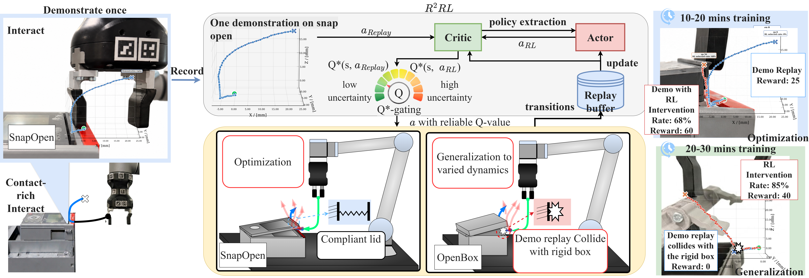

Replay and Reinforce:
Reusing One Demonstration to Learn
Cross-Object Contact-Rich Manipulation
SDU Robotics, the Maersk Mc-Kinney Moller Institute
Overview
Collecting per Object Demonstration Data is Costly
A motion that succeeds on one object may fail on another because of differences in compliance, friction, or insertion tolerance. Instead of collecting a new demonstration for every object, we reuse one source-task demonstration to guide online learning on related objects, without collecting target-task demonstrations.
One demonstration can remain useful for online RL even when it is not directly executable on the target object.
we introduce R²RL, which treats the single demonstration as a replay policy rather than merely a one-shot initialization signal, and introduces uncertainty-aware Q-gating. This allows the demonstration to remain useful not only for optimizing the source task, but also for guiding cross-object adaptation even when direct replay fails on the target task.
Method Overview

Two Source Demonstrations
One demonstration is collected for SnapOpen and one for PegInHole. Each trajectory is reused to optimize its source task and train separate policies on related target objects. The paper evaluates SnapOpen → {SnapOpenNew, OpenBox} and PegInHole → PlugIn.
Cross-Object Adaptation: Lid Opening
The SnapOpen demonstration supplies a motion prior for opening a compliant snap-fit lid. OpenBox requires adaptation to a rigid lid with different contact dynamics; direct replay fails on this target. The clips below compare R²RL, IBRL, and RLPD on the source and target tasks.
All task-comparison clips below use one source demonstration per method.
SnapOpen · Source task
OpenBox · Target task
Cross-Object Adaptation: Insertion
The PegInHole demonstration is reused for USB insertion in PlugIn, which requires tighter positional tolerance. R²RL learns through online interaction on each task using the same source demonstration, without a new PlugIn demonstration.
PegInHole · Source task
PlugIn · Target task
Ablations and Residual RL
The paper investigates uncertainty-aware Q-gating and behavior-cloning (BC) regularization, and compares action selection with additive residual correction. The regularized Residual RL variant uses the same actor and critic objectives as R²RL.
Experimental Results
The videos illustrate individual runs, rather than aggregate success rates. See the paper for learning curves, success rates over ten real-world evaluation trials per setting, and the one- and ten-source-demonstration baseline protocols. No target-task demonstrations are supplied for OpenBox or PlugIn.